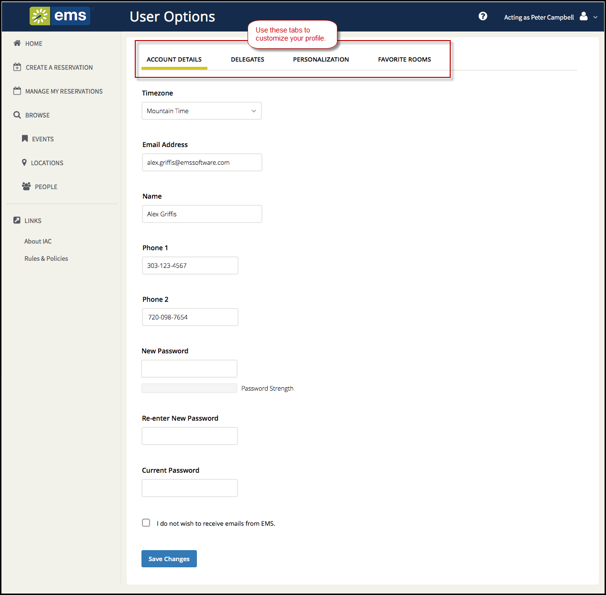

The User Options page opens, showing tabs along the top where you can customize your user profile. The Account Details tab contains basic account information.

- Modify any account information as needed—your email address, name, phone number, and so on.
Note: If you log into
- If you wish to change your password, enter a new password in the New Password field, and then enter the same password again in the Re-Enter New Password field. Lastly, enter your Current Password.
- You can click the I do not wish to receive emails from EMS option (if available) to opt out of automatic emails from